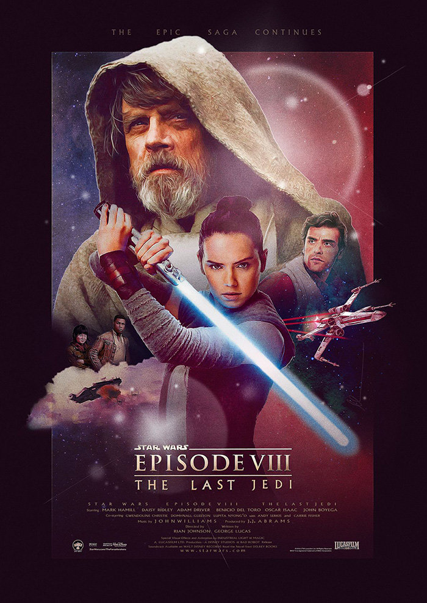

The Last Jedi
In *The Last Jedi*, Rey seeks out Luke Skywalker to train her in the ways of the Force as the First Order, led by Supreme Leader Snoke and Kylo Ren, wages war on the Resistance. Luke, grappling with his own past failures, is hesitant to train Rey, fearing the power she holds. Meanwhile, the Resistance is relentlessly pursued by the First Order. Finn, Rose, and Poe Dameron undertake a risky mission to save their fleet. In a climactic showdown, Luke confronts Kylo Ren, allowing the Resistance to escape and reigniting hope for the galaxy. Rey’s journey continues as she embraces the Force, setting the stage for the final battle.


Characters
| Cast Actor | Character |
|---|---|
| Daisy Ridley | Rey |
| Mark Hamill | Luke Skywalker |
| Adam Driver | Kylo Ren |
| Carrie Fisher | Leia Organa |
| John Boyega | Finn |
| Oscar Isaac | Poe Dameron |
| Kelly Marie Tran | Rose Tico |